Tales of growth and buckling:
Micro-pattern formation on petal surface cells.
Carlos A. Lugo - Glover Lab - University of Cambridge.
cal72@cam.ac.uk
First and foremost: Collaborators.
Chiara Airoldi, B. J. Glover - Glover Lab.
Chao Chen, A. Crosby - UMASS.
Paula Rudall - Royal Botanic Gardens, Kew.
Raymond Wightman - SLCU.
What is this talk about and why bother?
Flower interactions with the environment.
Structural Hydrophobicity
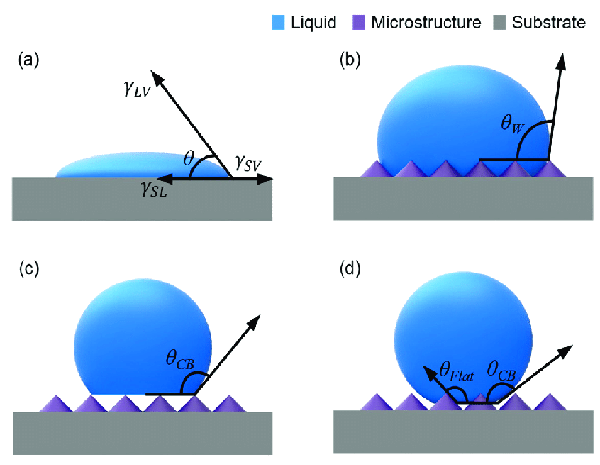Structural Colour

Epidermal petal cell surfaces!
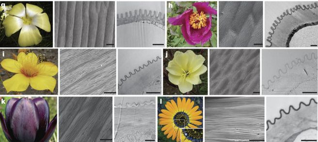
Moyroud et al. Nature (2017)
Imagine you have bee eyes.
Also, imagine that this sphere is a flower....
Development of wrinkles in petals.
Conundrum.
What determines the appearance/lack of structures on the epidermal cells?
Genetics? $\rightarrow$ Chemistry? $\rightarrow$ Mechanics?.
Can we link some of the timescales and processes involved?
Can we trigger/inhibit the formation of these patterns?
Which of the mechanisms are generic and what are the relevant parameters of the system?
Meet Hibiscus trionum
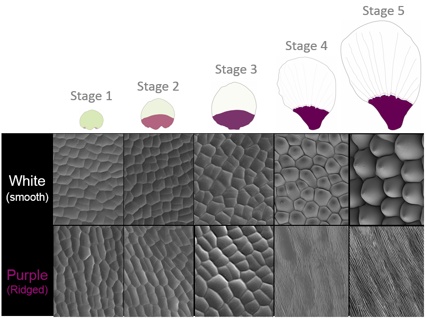
Late stage 3 - Onset of striation.
Stage 5 - Fully developed ridges.
Pattern Development
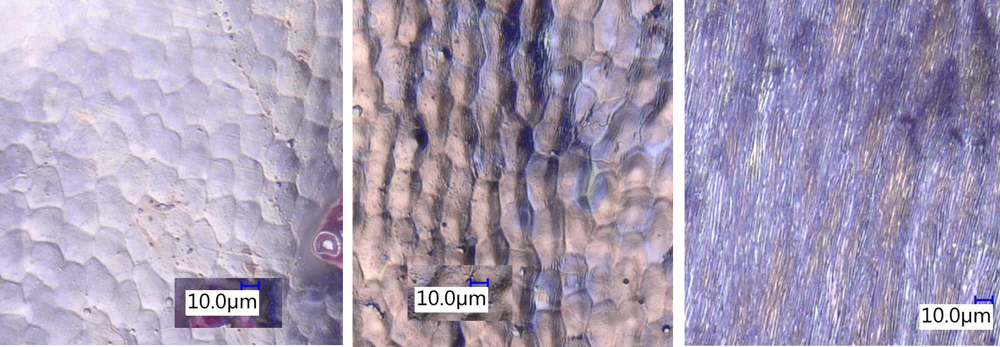Ridge development
Ridge development

Ridge development
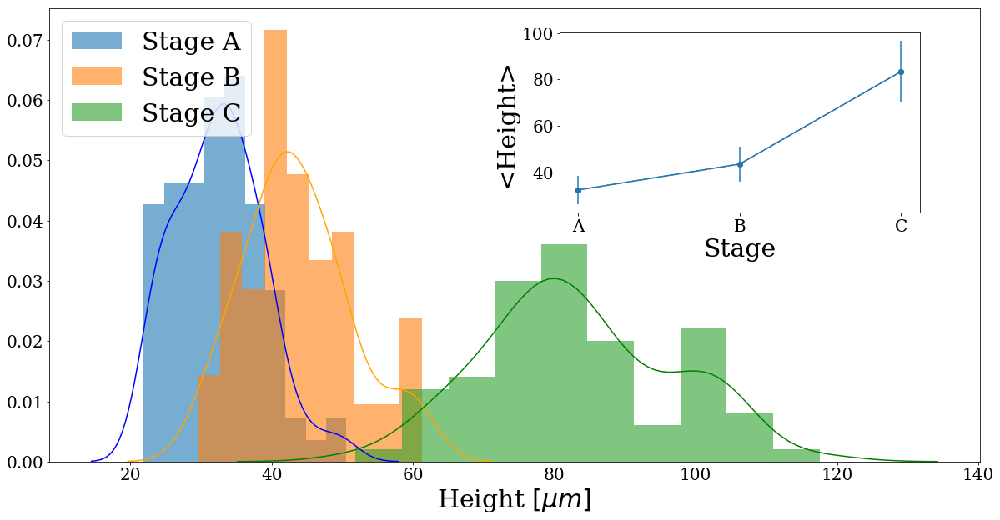 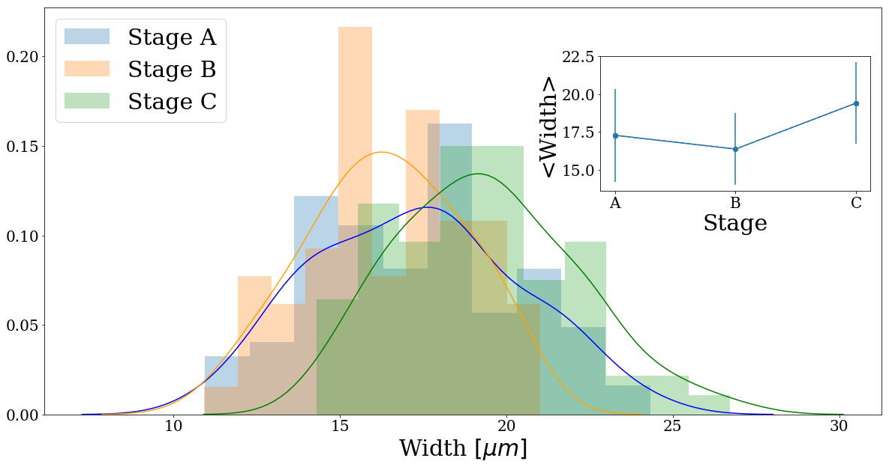
Ridge characterisation-EM
Cryo fractures (Ray-Chiara SLCU)
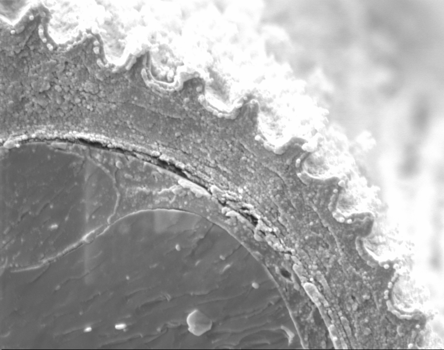Transmission (Paula KEW)
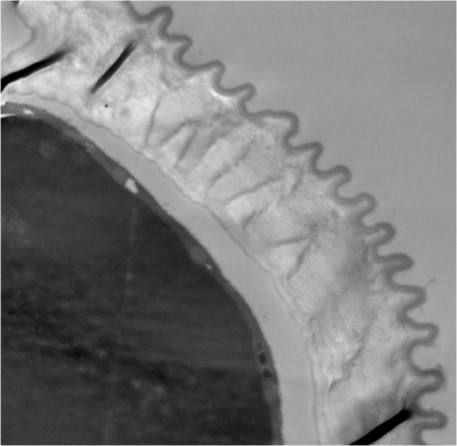Ridge characterisation-EM
Cryo fractures (Ray-Chiara SLCU)
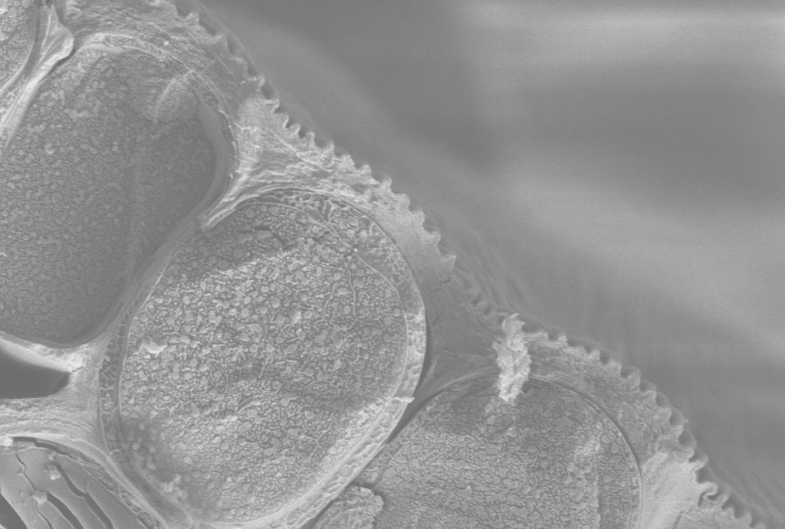Transmission (Paula KEW)
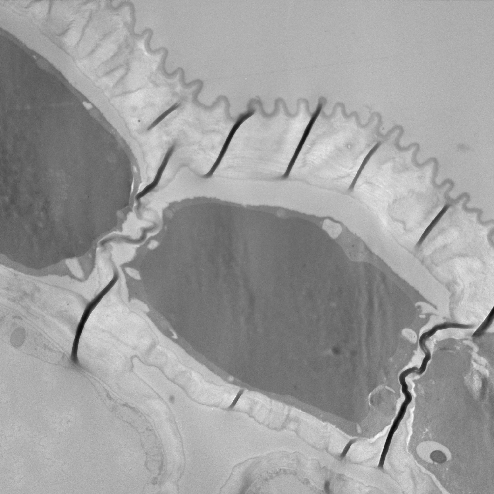Ridge characterisation-Cutin staining (Paula-Kew)

Ridge features.
Wavelength
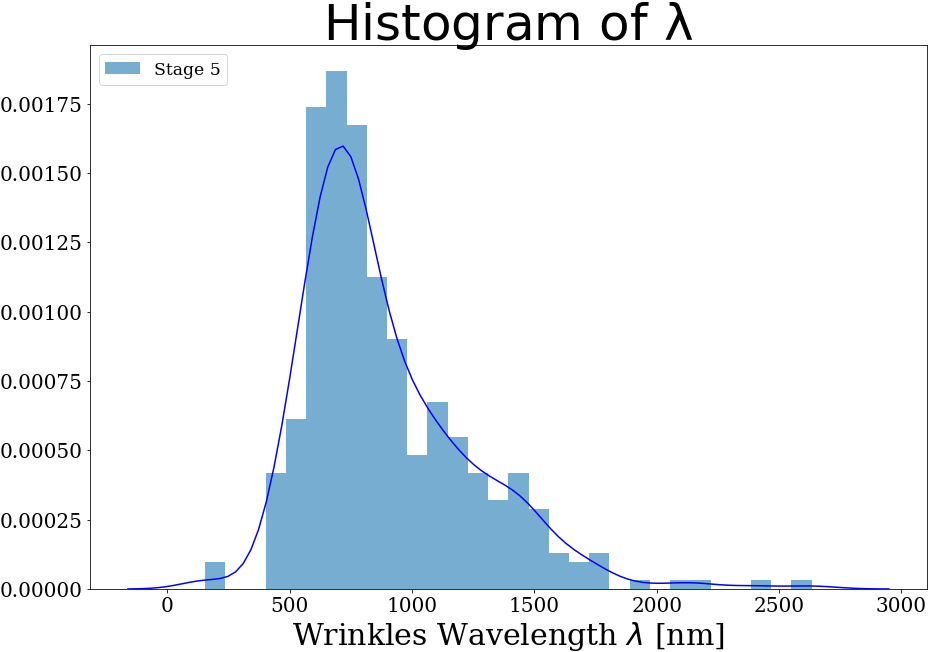Ridge features.
Amplitude
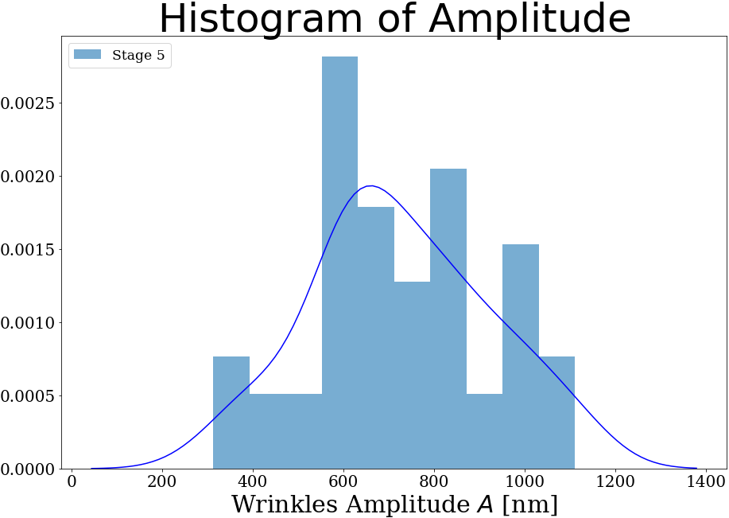Ridge features.
Cuticular Layer
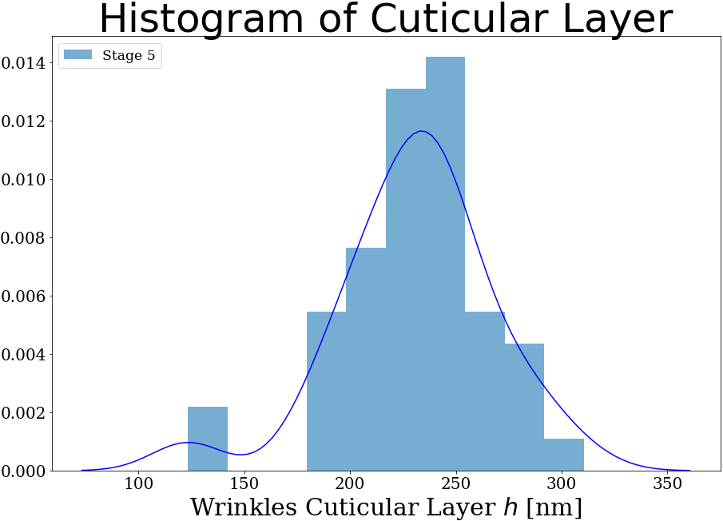Cuticle Development
Cuticular Layer
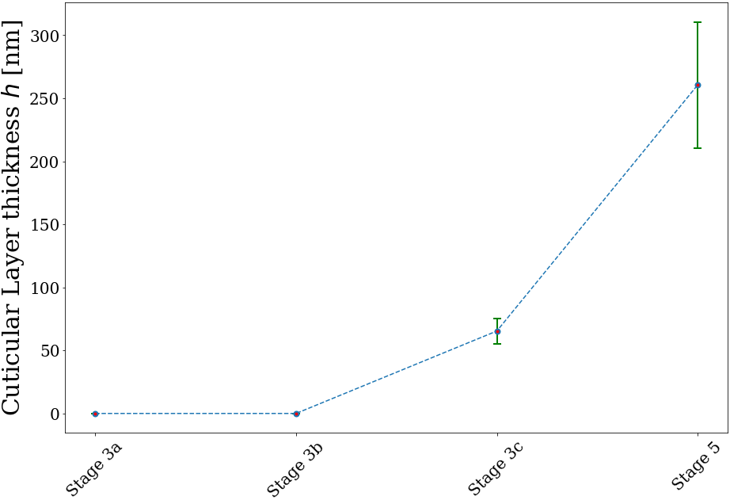ECM
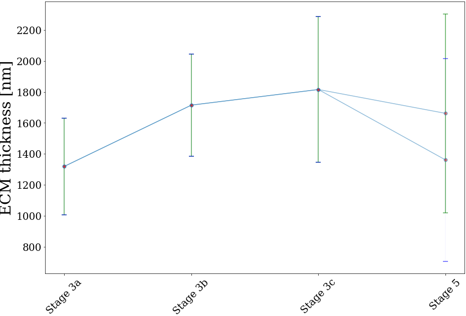Summary.

Summary.
Stage 3 (Flat)
$\begin{array}{|c|c|} \hline \scriptsize{Variable} & \scriptsize{mean (std)} \\ \hline \lambda & - \\ \hline A & - \\ \hline h & - \\ \hline L_x & 0.18 \, (0.03) \, \mu m \\ \hline L_y & 0.30 \, (0.05) \, \mu m \\ \hline L_{ECM} & 1.31 \, (0.31) \, \mu m \\ \hline \end{array}$
Stage 5 (Fully Striated)
$\begin{array}{|c|c|} \hline \hline \scriptsize{Variable} & \scriptsize{mean (std)} \\ \hline \hline \scriptsize{ \lambda} & \scriptsize{0.89 \, (0.34) \, \mu m} \\ \hline \scriptsize{ A }& \scriptsize{0.72 \, (0.19) \, \mu m } \\ \hline \scriptsize{ h} & \scriptsize{0.26 \, (0.05) \, \mu m} \\ \hline \scriptsize{ L_x }& \scriptsize{ 0.20 \, (0.02) \, \mu m} \\ \hline \scriptsize{ L_y } & \scriptsize{ 0.79 \, (0.15) \, \mu m} \\ \hline \scriptsize{L_{ECM-B}} & \scriptsize{ 1.36 \, (0.65) \, \mu m} \\ \hline \scriptsize{L_{ECM-T}} & \scriptsize{ 1.66 \, (0.64) \, \mu m} \\ \hline \end{array}$
What can we say about the origin of these patterns?
Composition and mechanisms.
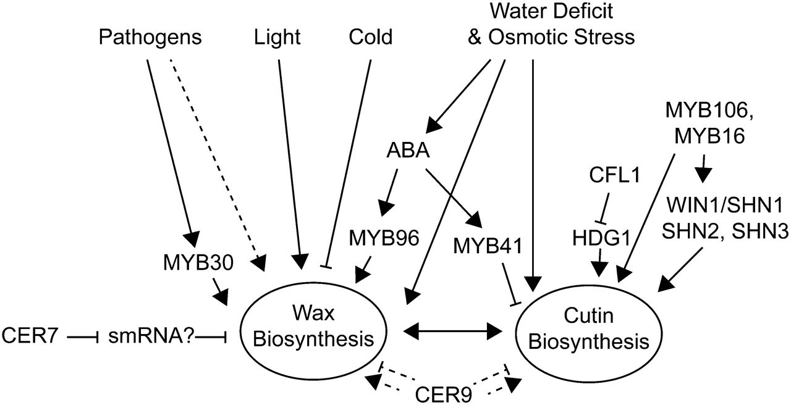
Yates and Rose, Plant Physiology (2013)
But seriously, how does this stuff happen?
Mechanics!
Mechanics and buckling theory
Video - Brau et al. Nature Physics (2017)
Common ground concepts:
Displacements and deformations of mass distributions are always caused by forces.
To address the effect of such forces we need to solve the equations of continuum mechanics
The force field transmitted to a volume element within a body by its surroundings (force per unit volume) is called stress.
Mechanics and buckling theory
General setting.
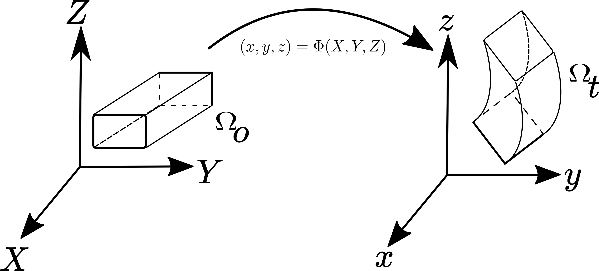$\rho\frac{\partial^2 \mathbf{u}}{\partial t}=\rho \mathbf{b}+\mathbf{div}\mathbb{\sigma}$
$\mathbf{u}=(u_1,u_2,u_3)$
$u_1=\Phi_1(X,Y,Z)-X$
$u_2=\Phi_1(X,Y,Z)-Y$
$u_3=\Phi_1(X,Y,Z)-Z$
Mechanics and buckling theory
General setting.
$\rho$: Mass density
$\mathbb{\sigma}$: Stress tensor
$\mathbb{F}=\nabla{\mathbb{\Phi}}$: Deformation gradient
This formalism applies to every continua for which a stress and a displacement fields can be defined.
The response of the material to stress should be imposed to distinguish a solid from other continua.
Living matter is well described by hyperelastic constitutive laws.
Mechanics: Buckling theory
Elements of every model.
1.- Thin sheet with bending with elastic modulus $E_f$ and thickness $h$
2.- Elastic foundation with elasticity modulus $E_s$
3.- Source of compression.
Buckling as a critical phenomena.
In general the problem at hand is to compute extremal values of the energy $U$
$$U=U_f+U_s-L$$
Where $U_f$ and $U_s$ represent the elastic energies of the substrate and the film.
$L$ represent any geometrical constraint (Lagrange multiplier) such as incompressibility.
A compressive threshold always needs to be reached in order to buckle.
Examples of compressive deformation.
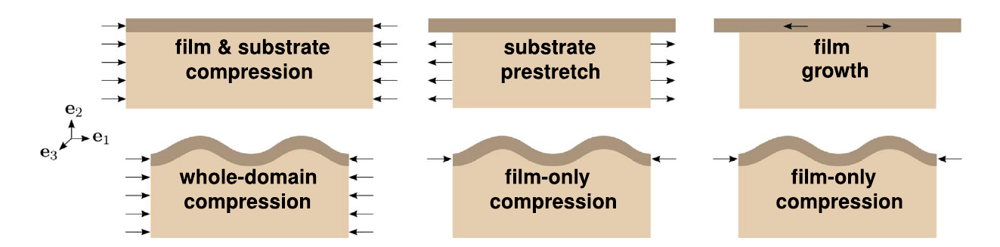
Elastomer theory results.
Perturbation Theory:
$B_m\partial_l^4 y +F \partial_l ^2 y +Kq y +K_2 q^2 y^2=0$
This admits to solutions of the form:
$y=Acos(2\pi x/\lambda)$
If:
$F=\frac{4\pi^2B_m}{\lambda^2}+\frac{\lambda K}{2\pi}$
Which implies that if:
$F < F_c=3q_o^2B_m$
The solution is flat
If $F=F_c$ then one gets buckled solutions with:
$\lambda_o=2\pi \left( \frac{2B_m}{K} \right) ^{1/3} \sim h \left( \frac{E_f}{E_s} \right) ^ {1/3}$
Growth Tensors-Quasistatic Model.
We use the control parameters $R$ and $h_o$ where:
$R=\frac{E_f}{E_s}$ and $h_o$ is the initial thickness of the cuticle.
Growth Models: $\mathbb{F}_{g,k}:$
\begin{pmatrix}g_{1k}(t) & 0 & 0\\\ 0 & g_{2k}(t) & 0\\\ 0& 0 & g_{3k}(t) \end{pmatrix}
Where $g_{jk}(t)$ follows the rule $\dot{g}_{jl}=\lambda_{jl}(t)g_{jl}$ or $g_{jl}(t)=g_{jl}(0)e^{\int_0^{t}\lambda_{jl}(t)dt}$
Examples: $\lambda(t)$
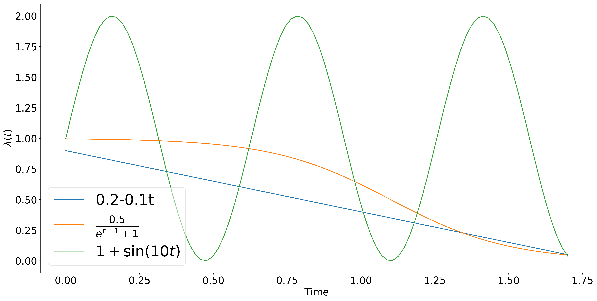Examples: $g(t)$
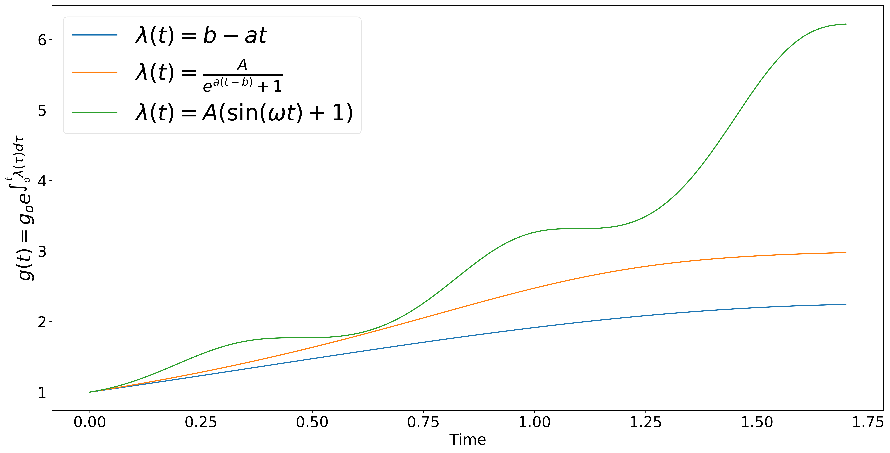Typical Dynamics.
Typical Dynamics II-Boundary Conditions.
Results $R=E_f/E_s$.
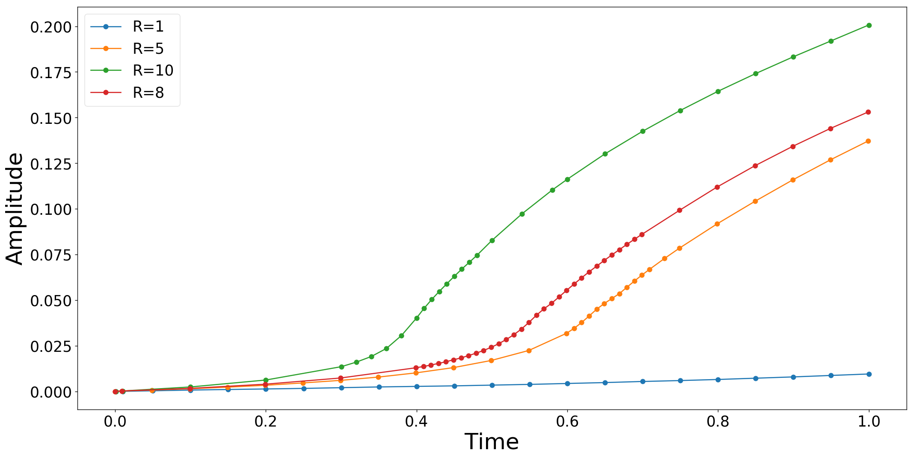Results $h_o$.
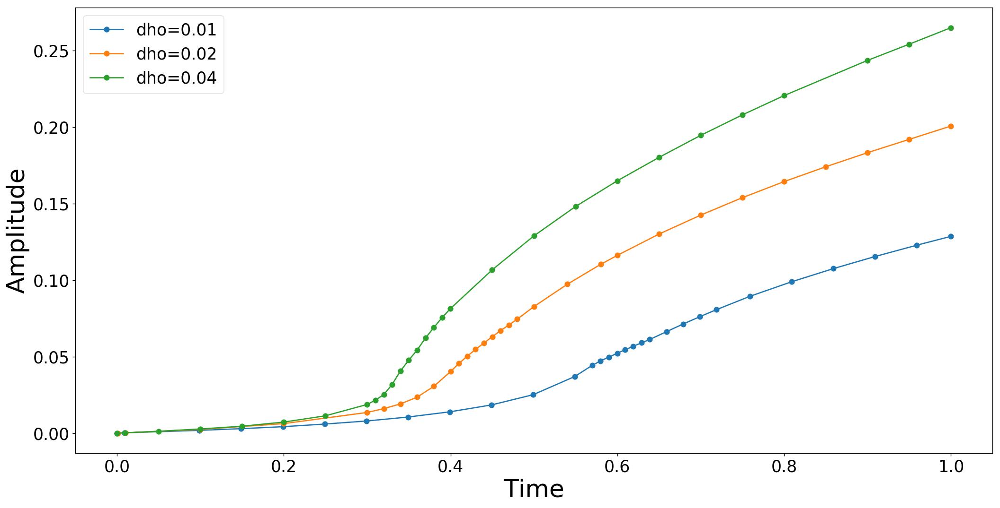Elastic Modulii Estimations (AFM)
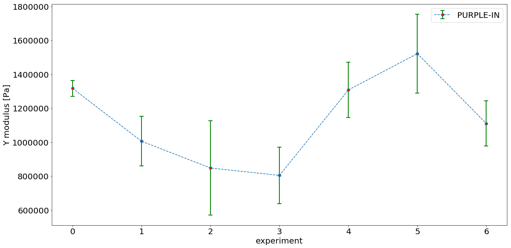
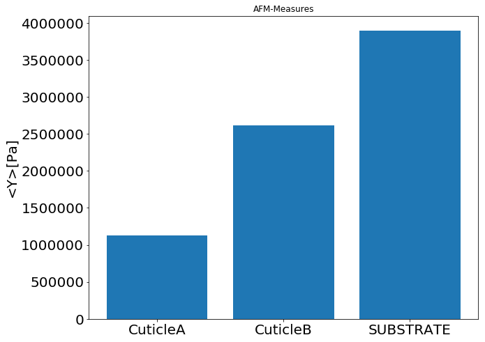
Characterization of transgenic plants with smooth flowers
Striated WT flowers:
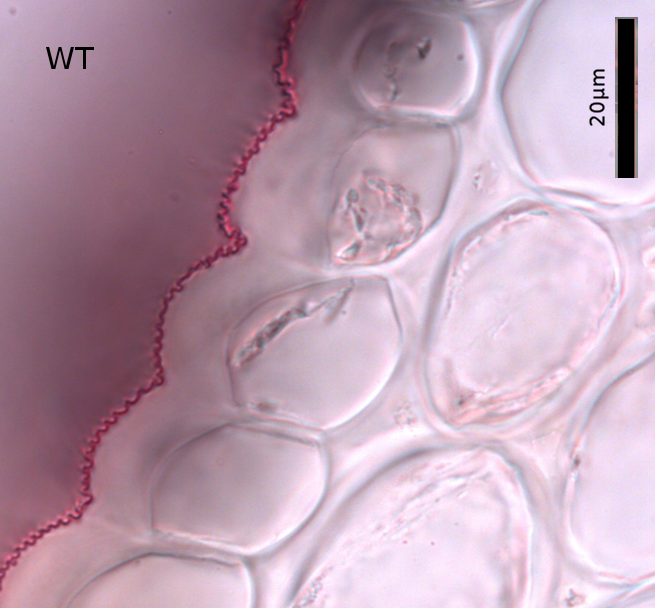Transgenics with smooth flowers:
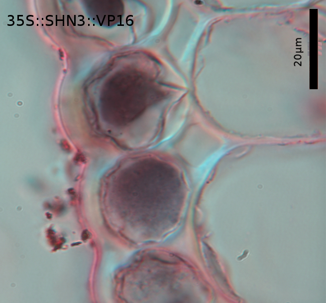- Cuticle thickness
- Cell growth
- Stiffness
- Chemistry-LESA-MS
Acknowledgments.
Jordan Ferria - Glover Lab.
Edwidge Moyroud - SLCU.